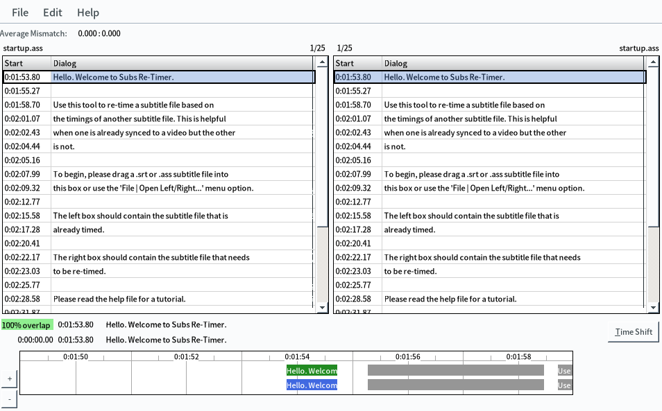

Retiming subtitles
Japanese subtitles can be found in many places. Often after downloading an archive with subtitles for your show you find that the subtitles are not in sync with the video files you have on your computer. In this article let's discuss what you can do to sync them.
There are two methods of retiming subtitles available today:
- Manually adjusting timings using the retimer included with subs2srs or by adjusting the subtitle delay in mpv.
- Using an automatic tool, ffsubsync or alass.
FFsubsync and alass fail to retime subtitle files with lots of commercial breaks unless the same breaks are present in the video file, which is almost never the case. Otherwise, the automatic tools are almost always faster than using a manual retimer.
Loading subtitles
mpv
can automatically detect and load subtitle files when opening a video.
To set mpv to load all subs containing media filename, enable fuzzy searching.
To be able to store subtitles in their own subfolder,
specify a list of desired folder names separated by colons in sub-file-paths parameter.
Add the following settings to ~/.config/mpv/mpv.conf.
sub-auto=fuzzy
sub-file-paths=ass:srt:sub:subs:subtitles:subs.en:subs.ja
Although you can load a subtitle file if you drag and drop it into a mpv window,
this requires you to have a graphical file manager installed.
These days almost everyone uses terminal-based file managers.
I recommend renaming subtitles before opening a video to have mpv load them for you.
The best tool for doing it in my opinion is
vidir.
In addition to vidir, I advise you to install
lf.
It's an excellent terminal-based file manager.
You can configure it to bring vidir for you when you press a certain key.
Another helpful program you might need is atool. Atool is going to help you extract archives with subtitles downloaded from the Internet.
Add the following settings to ~/.config/lf/lfrc.
# Set the `b` key to call vidir.
map b $vidir
# Extract archives by pressing `E`.
map E !atool -x $fx
Let's see how you can quickly rename subtitles with vidir. For this example I took subs for Steins;Gate from Kitsunekko.net. Watch this video to get a gist of how it's done.
By default, vidir will try to use the text editor
that is set via the EDITOR environment variable.
I have it set to nvim.
To use nvim, install Neovim
and add export EDITOR="nvim" as a new environment variable.
Extracting internal subtitles
Often you want to extract internal subtitles to use them as reference for retiming. Most likely the internal subtitles are going to be English fansubs and the ones you want to retime are Japanese subtitles downloaded from kitsunekko.
To extract all internal subtitles from videos in a folder in one go you can use a bash loop.
for video in ./*.mkv; do
ffmpeg -i "$video" -f srt "${video%.*}".srt
done
Sometimes a video contains multiple subtitle tracks.
To find out which one to extract, use ffprobe.
ffprobe -loglevel error -select_streams s -show_entries stream_tags=language,title:stream=index -of compact video.mkv
To select a stream to extract, specify the -map parameter.
E.g., to extract track #1 you use -map 0:1.
ffmpeg -i video.mkv -map 0:1 -f srt subs.srt
Similarly, use a bash loop to convert existing subtitles from one format to another.
You can swap ass and srt in the example.
for sub in ./*.ass; do
ffmpeg -i "$sub" -f srt "${sub%.*}".srt
done
Manual retiming
In mpv
If the timings are not too far off, you can adjust them in mpv by using built-in commands.
Add the following lines to ~/.config/mpv/input.conf.
# Add/subtract 50 ms delay from subs
Z add sub-delay +0.05
z add sub-delay -0.05
# Adjust timing to previous/next subtitle
X sub-step 1
x sub-step -1
Try to find the right timings
by pressing z, Z, x and X.
zandZchange the sub delay,xandXjump between adjacent subtitles.
With subs2srs
Subs2srs ships with a sub retimer tool. After you install subs2srs, you can find the retimer by its desktop entry. This tool is helpful when you have a reference subtitle file that is already synced. By selecting subtitle lines and pressing "Time shift" you "copy" timings from one file to the other. The retimer tool automatically applies time shifts to all subtitle lines following the one you select.

Screenshot.
Automatic retiming
With FFsubsync
FFsubsync is an automatic synchronization utility. When synchronizing, you can use a correctly synchronized subtitle file or a video as a reference for synchronization.
To install FFsubsync, first install ffmpeg, pipx, then the program itself.
$ sudo pacman -S --needed ffmpeg python-pipx
$ pipx install ffsubsync
I recommend retiming subtitles in bulk, using a bash-loop.
For this example let's say the videos are stored in the current directory,
the subtitle files I want to retime are stored in the subs.ja directory
the reference subtitles are stored in the subs.en directory
and all subtitles are in ass format.
This loop retimes all Japanese subs in the folder using the corresponding English subs as reference.
for reference in ./subs.en/*.ass; do
to_retime=${reference//.en/.ja}
retimed=${to_retime%.*}_retimed.${to_retime##*.}
ffsubsync "$reference" -i "$to_retime" -o "$retimed"
done
This loop retimes all Japanese subs using the corresponding videos as reference.
for reference in ./*.mkv; do
to_retime=./subs.ja/$(basename "${reference/.mkv/.ass}")
retimed=${to_retime%.*}_retimed.${to_retime##*.}
ffsubsync "$reference" -i "$to_retime" -o "$retimed"
done
With alass
alass
is a program similar to FFsubsync.
It works exactly like FFsubsync but its command line interface differs a little.
Arch Linux users can install alass from
the AUR.
You can use the example bash loops shown above with alass
if you remove -i and -o since alass doesn't need them.
Refer to the docs on GitHub for more detailed instructions.
With autosubsync-mpv
Retiming with FFsubsync and alass can be further automated by using autosubsync-mpv. Autosubsync-mpv is an add-on for the mpv media player. Watch this video to see how it works and how to set it up.
To use autosubsync-mpv first ensure that mpv, ffmpeg, pipx and ffsubsync are installed.
$ sudo pacman -S --needed mpv ffmpeg python-pipx
$ pipx install ffsubsync
Download and install the mpv add-on.
$ git clone 'https://github.com/Ajatt-Tools/autosubsync-mpv' ~/.config/mpv/scripts/autosubsync
When you watch a video in mpv,
press n to bring the add-on's menu.
It's going to give you the following options:
- Sync to audio
- Sync to another subtitle
- Save current timings.
Choose Sync to another subtitle if you have a reference subtitle in another language.
Otherwise, choose Sync to audio.
If you have made changes to the timings by pressing z and Z in mpv,
you have an option to permanently save them to a file if you choose Save current timings.